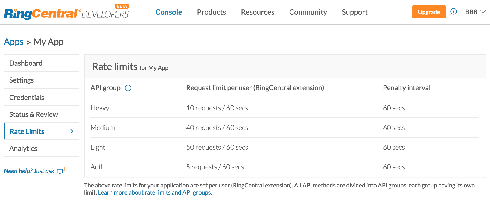

class: middle, center, inverse [<svg width="80" height="80" viewBox="0 0 250 250" style="fill:#fff; color:#0073ae; position: absolute; top: 0; border: 0; right: 0;" aria-hidden="true"><path d="M0,0 L115,115 L130,115 L142,142 L250,250 L250,0 Z"></path><path d="M128.3,109.0 C113.8,99.7 119.0,89.6 119.0,89.6 C122.0,82.7 120.5,78.6 120.5,78.6 C119.2,72.0 123.4,76.3 123.4,76.3 C127.3,80.9 125.5,87.3 125.5,87.3 C122.9,97.6 130.6,101.9 134.4,103.2" fill="currentColor" style="transform-origin: 130px 106px;" class="octo-arm"></path><path d="M115.0,115.0 C114.9,115.1 118.7,116.5 119.8,115.4 L133.7,101.6 C136.9,99.2 139.9,98.4 142.2,98.6 C133.8,88.0 127.5,74.4 143.8,58.0 C148.5,53.4 154.0,51.2 159.7,51.0 C160.3,49.4 163.2,43.6 171.4,40.1 C171.4,40.1 176.1,42.5 178.8,56.2 C183.1,58.6 187.2,61.8 190.9,65.4 C194.5,69.0 197.7,73.2 200.1,77.6 C213.8,80.2 216.3,84.9 216.3,84.9 C212.7,93.1 206.9,96.0 205.4,96.6 C205.1,102.4 203.0,107.8 198.3,112.5 C181.9,128.9 168.3,122.5 157.7,114.1 C157.9,116.9 156.7,120.9 152.7,124.9 L141.0,136.5 C139.8,137.7 141.6,141.9 141.8,141.8 Z" fill="currentColor" class="octo-body"></path></svg>](https://github.com/grokify/ringcentral-polling-and-syncing) <center> </center> ## Polling and Syncing --- layout: false ### About Me * John Wang - aka "Grokify" * Sr. Director of Platform for RingCentral * Top 50 Contributor (of 900+) to OpenAPI Generator * 5,476 RingCentral Dev Community reputation * 6,835 Stack Overflow reputation - Top 0.01% --- ### Agenda * Use Cases * Rate Limiting * Polling * Syncing * Timing --- class: middle, center, inverse # Use Cases --- ### Use Cases 1. Archival * Full backup * On-going 1. Client Apps * Viewing call log or messages in a client app * View recent items * Get new and updated items * Get older items via infinite scroll #### Scope * Call Log - Historical Calls * Message Store - Incoming and Outgoing Messages (voicemail, SMS, fax) --- ### Account Limits * Automatic Call Recordings: 90 days or 100,000 messages * Inbound Voicemail/Fax: 200 messages * Sent Fax: 30 days * Text Messages: 5,000 per folder (Inbox, Outbox, Sent, Deleted) Full knowledgebase article #1894: [Message Storage and Account Data Retention](https://success.ringcentral.com/articles/RC_Knowledge_Article/2178) --- class: middle, center, inverse # Rate Limits --- ### Rate Limit Types 1. Overall App Rate Limit 1. API Rate Limits --- ### Overall App Rate Limit Limit * 20 requests / second / IP address * Cannot be increased Throttled Result * Status Code: 429 * Retry-After: 30 Usage * When receiving 429 HTTP status code, retry the request after the number of seconds specified in the `Retry-After` header. --- ### API Rate Limits 1. Set for app/user pair 1. Set for API groups (`X-Rate-Limit-Group` header) 1. Specified in Developer Portal for your app 1. Contact Dev Support if you need more <center>  </center> --- ### Response Headers * `X-Rate-Limit-Group`: heavy, medium, light, auth * `X-Rate-Limit-Limit`: current rate limit * `X-Rate-Limit-Remaining`: remaining in this window * `X-Rate-Limit-Window`: window size * `Retry-After`: seconds to wait (only with 429) #### Usage 1. When `X-Rate-Limit-Remaining` reaches `0`, wait the number of seconds specified by `X-Rate-Limit-Window`. You should not receive a 429. 1. When receiving 429 HTTP status code, retry the request after the number of seconds specified in the `Retry-After` header. --- ### Increasing API Rate Limits * Sometimes you may need higher limits * Contact Dev Support to discuss your use case #### Dev Support Links * Support Page: https://developer.ringcentral.com/support.html * Create Ticket: https://developer.ringcentral.com/api/support-cases/create * Check Tickets: https://developer.ringcentral.com/api/support-cases/check --- class: middle, center, inverse # Polling --- ### Polling Overview Retrieve all call log or message store items to build paged reports Benefits * Uses common RFC-3339 time filters: `dateFrom` and `dateTo`, e.g. `2018-01-01T00:00:00Z` * Uses common paing approaches: `page` and `perPage` properties --- ### Endpoints [`/restapi/v1.0/account/~/call-log`](https://developer.ringcentral.com/api-docs/latest/index.html#!#RefCompanyCallLog.html) - [try](https://developer.ringcentral.com/api-explorer/latest/index.html#/!/Call_Log/loadAccountCallLog) [`/restapi/v1.0/account/~/extension/~/call-log`](https://developer.ringcentral.com/api-docs/latest/index.html#!#RefUserCallLog.html) - [try](https://developer.ringcentral.com/api-explorer/latest/index.html#/!/Call_Log/loadExtensionCallLog) [`/restapi/v1.0/account/~/extension/~/message-store`](https://developer.ringcentral.com/api-docs/latest/index.html#!#RefMessageList.html) - [try](https://developer.ringcentral.com/api-explorer/latest/index.html#/!/SMS_and_MMS/listMessages) #### Polling query parameters Interval and paging parameters (others filters exist): * `dateTo`: default = now, matches `startTime` or `creationTime` * `dateFrom`: default = `dateTo` - 24 hrs, matches `startTime` * `page`: default = `1` * `perPage`: default = `100`, max = `1000` --- ### Example Response <div style="font-size:70%"> ``` { "uri":"https://platform.ringcentral.com/restapi/v1.0/account/11111111/ \ call-log?view=Simple&showBlocked=true&withRecording=false& \ dateFrom=2018-09-17T10:04:00.000Z&page=1&perPage=1", "records":[ { "uri":"https://platform.ringcentral.com/restapi/v1.0/account/11111111/ \ call-log/BpMupf0GWZPFzUA?view=Simple", "id":"BpMupf0GWZPFzUA", "sessionId":"79486033016", "startTime":"2018-09-18T00:30:21.626Z", ... }, ... ], "paging":{ "page":1, "perPage":500, "pageStart":0, "pageEnd":0 }, "navigation":{ "nextPage":{ "uri":"https://platform.ringcentral.com/restapi/v1.0/account/11111111/ \ call-log?view=Simple&showBlocked=true&withRecording=false& \ dateFrom=2018-09-17T10:04:00.000Z&page=2&perPage=500" }, "firstPage":{ "uri":"..." }, "lastPage":{ "uri":"..." } } } ``` </div> --- ### Considerations - Sizing Pages Medium sized pages return faster than max size. * `perPage` can be up to a maximum of `1000` * Consider sizing smaller, e.g. `200` - `500` for better performance --- ### Considerations - Sizing Intervals High page numbers will return slower Use `dateTo` and `dateFrom` intervals to improve response times * Responses return URLs for: `nextPage`, `previousPage`, `firstPage`, `lastPage` * `message-store`, but not `call-log`, returns `totalPages` --- ### Considerations - Date Overlaps Calls that cross polling date intervals require extra care * `dateFrom` and `dateTo` act on `startTime` * Calls are not entered into `call-log` until just after the call is complete * Calls starting and ending across an interval will not be captured with non-overlapping intervals * Set your `dateFrom` far back enough to capture calls, e.g. 2 hrs if your calls are less than 2 hrs. --- ### Considerations - Updates * Updated messages may not be captured. * If necesssary, may want to pull messages after average time a user updates their messages, e.g. days. --- class: middle, center, inverse # Syncing --- ### Syncing Overview Retrieve all new and updated items since last API retrival using last `syncToken` Benefits * Automaticaly get all changes * No need to manually handle intervals and paging * No need to manually handle start time overlaps * No need to manually handle updates Usage * Used by RingCentral's own end-user apps * Now recommended for archival as well --- ### Endpoints * [`/restapi/v1.0/account/~/call-log-sync`](https://developer.ringcentral.com/api-docs/latest/index.html#!#RefCompanyCallLogSync.html) - [try](https://developer.ringcentral.com/api-explorer/latest/index.html#/!/Call_Log/syncAccountCallLog) * [`/restapi/v1.0/account/~/extension/~/call-log-sync`](https://developer.ringcentral.com/api-docs/latest/index.html#!#RefUserCallLogSync.html) - [try](https://developer.ringcentral.com/api-explorer/latest/index.html#/!/Call_Log/syncExtensionCallLog) * [`/restapi/v1.0/account/~/extension/~/message-sync`](https://developer.ringcentral.com/api-docs/latest/index.html#!#RefMessageSync.html) - [try](https://developer.ringcentral.com/api-explorer/latest/index.html#/!/SMS_and_MMS/syncMessages) #### Syncing query parameters * `syncType`: Full (`FSync`) or incremental (`ISync`), default to `FSync` * `syncToken`: Used for ISync * `recordCount`*: Max number of records to return \* required --- ### Example Response ``` { "uri":"https://platform.ringcentral.com/restapi/v1.0/account/11111111/ \ extension/22222222/call-log-sync?syncType=FSync&recordCount=2", "records":[ { "uri":"https://platform.ringcentral.com/restapi/v1.0/account/11111111/ \ extension/22222222/call-log/BpMupf0GWZPFzUA?view=Simple", "id":"BpMupf0GWZPFzUA", "sessionId":"79486033016", "startTime":"2018-09-18T00:30:21.626Z", ... }, ... ], "syncInfo":{ "syncType":"FSync", "syncToken":"FAMAAAFM3nowYAQAAAFl7Seg5ggAAAAAK1aeuA0AAAASgbykSA4AAAFM3...", "syncTime":"2018-09-18T14:48:41.958Z" } } ``` --- ### Considerations Each call returns a max of 250 messages To get full history, keep calling `ISync` until `records` property is an empty array: `[]` Useful for: * Full history * Incremental syncs where there are over 250 messages --- class: middle, center, inverse # Timing --- ### When to Run? Periodic Triggers * Regularly: every 5+ minutes for near real-time * Several times / day: high volume inbound voicemail / fax `message-store` * Daily archival: once a day, often at night Event-based Triggers * Message Store: `message-store` event filter * For SMS, no polling may be necessary as you can get full text in the instant message type * Call Log: Check `presence` event filter can poll `call-log` 30 seconds after call completion * Use delay if you don't need to poll on every update --- class: inverse [<svg width="80" height="80" viewBox="0 0 250 250" style="fill:#fff; color:#0073ae; position: absolute; top: 0; border: 0; right: 0;" aria-hidden="true"><path d="M0,0 L115,115 L130,115 L142,142 L250,250 L250,0 Z"></path><path d="M128.3,109.0 C113.8,99.7 119.0,89.6 119.0,89.6 C122.0,82.7 120.5,78.6 120.5,78.6 C119.2,72.0 123.4,76.3 123.4,76.3 C127.3,80.9 125.5,87.3 125.5,87.3 C122.9,97.6 130.6,101.9 134.4,103.2" fill="currentColor" style="transform-origin: 130px 106px;" class="octo-arm"></path><path d="M115.0,115.0 C114.9,115.1 118.7,116.5 119.8,115.4 L133.7,101.6 C136.9,99.2 139.9,98.4 142.2,98.6 C133.8,88.0 127.5,74.4 143.8,58.0 C148.5,53.4 154.0,51.2 159.7,51.0 C160.3,49.4 163.2,43.6 171.4,40.1 C171.4,40.1 176.1,42.5 178.8,56.2 C183.1,58.6 187.2,61.8 190.9,65.4 C194.5,69.0 197.7,73.2 200.1,77.6 C213.8,80.2 216.3,84.9 216.3,84.9 C212.7,93.1 206.9,96.0 205.4,96.6 C205.1,102.4 203.0,107.8 198.3,112.5 C181.9,128.9 168.3,122.5 157.7,114.1 C157.9,116.9 156.7,120.9 152.7,124.9 L141.0,136.5 C139.8,137.7 141.6,141.9 141.8,141.8 Z" fill="currentColor" class="octo-body"></path></svg>](https://github.com/grokify/ringcentral-polling-and-syncing) ### More Info Presentation https://grokify.github.io/ringcentral-polling-and-syncing/ Blog https://medium.com/ringcentral-developers/use-message-sync-api-to-archive-your-sms-fax-and-voicemail-messages-cd23748e188f Example App https://github.com/embbnux/ringcentral-message-sync-demo --- class: inverse [<svg width="80" height="80" viewBox="0 0 250 250" style="fill:#fff; color:#0073ae; position: absolute; top: 0; border: 0; right: 0;" aria-hidden="true"><path d="M0,0 L115,115 L130,115 L142,142 L250,250 L250,0 Z"></path><path d="M128.3,109.0 C113.8,99.7 119.0,89.6 119.0,89.6 C122.0,82.7 120.5,78.6 120.5,78.6 C119.2,72.0 123.4,76.3 123.4,76.3 C127.3,80.9 125.5,87.3 125.5,87.3 C122.9,97.6 130.6,101.9 134.4,103.2" fill="currentColor" style="transform-origin: 130px 106px;" class="octo-arm"></path><path d="M115.0,115.0 C114.9,115.1 118.7,116.5 119.8,115.4 L133.7,101.6 C136.9,99.2 139.9,98.4 142.2,98.6 C133.8,88.0 127.5,74.4 143.8,58.0 C148.5,53.4 154.0,51.2 159.7,51.0 C160.3,49.4 163.2,43.6 171.4,40.1 C171.4,40.1 176.1,42.5 178.8,56.2 C183.1,58.6 187.2,61.8 190.9,65.4 C194.5,69.0 197.7,73.2 200.1,77.6 C213.8,80.2 216.3,84.9 216.3,84.9 C212.7,93.1 206.9,96.0 205.4,96.6 C205.1,102.4 203.0,107.8 198.3,112.5 C181.9,128.9 168.3,122.5 157.7,114.1 C157.9,116.9 156.7,120.9 152.7,124.9 L141.0,136.5 C139.8,137.7 141.6,141.9 141.8,141.8 Z" fill="currentColor" class="octo-body"></path></svg>](https://github.com/grokify/ringcentral-polling-and-syncing) ### Thank You RingCentral Developers * https://developer.ringcentral.com * https://github.com/ringcentral * https://github.com/ringcentral-tutorials * https://medium.com/ringcentral-developers * https://twitter.com/ringcentraldevs Reach Me * https://twitter.com/grokify * https://github.com/grokify